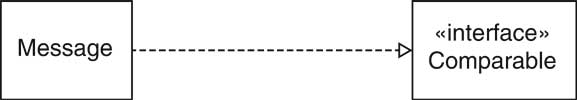

previous
|
start
|
next
Interface Types
Interface type describes a set of methods
No implementation, no state
Class implements interface if it implements its methods
In UML, use stereotype «interface»

previous
|
start
|
next